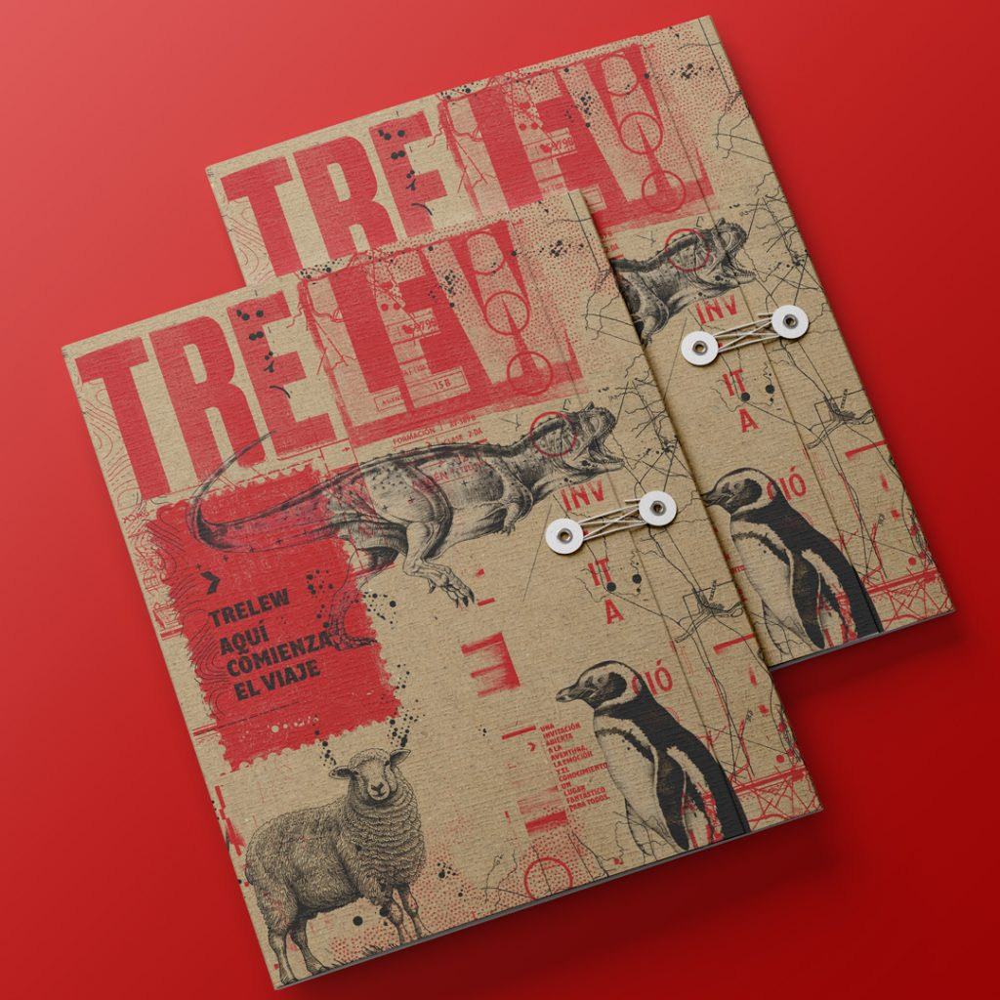

Metodología Científica [A+C+D]
Nuestro proceso creativo no es lineal. Es un ciclo de investigación, experimentación artística y resolución técnica.
Todo comienza con una pregunta científica o un hallazgo paleontológico. No inventamos historias, las interpretamos. Accedemos a papers, colecciones de museos y conversamos con especialistas para que la base sea sólida.


¿Cómo se traduce un dato en una emoción? Aquí es donde el arte y el diseño gráfico entran en juego. Ilustramos, diagramamos y pensamos el objeto como un portador de conocimiento.
Nuestra producción es "enlozada" o manufacturada con materiales que resisten el tiempo. Apostamos a objetos que duren, que se sientan premium y que cuenten una historia de la Patagonia profunda.
